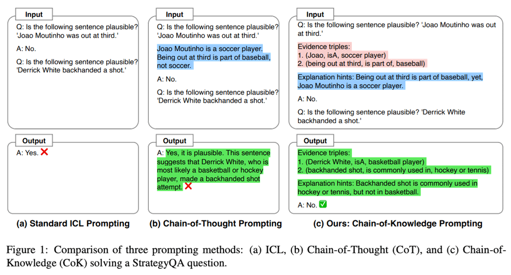

From Vague Requests to Precise Directives — Controlling the LLM Brain
Lecture, Practice, and Discussion for Week 3
The prompt is your only interface to the LLM brain
The hidden instruction that shapes every response
{"role": "system", "content": "You are a..."}Same question, different system prompts, completely different outputs
# Without system prompt
messages = [
{"role": "user", "content": "What is photosynthesis?"}
]
# → Generic textbook explanation, 3 paragraphs
# With system prompt
messages = [
{"role": "system", "content": """You are a research advisor for
graduate students in plant biology. Explain concepts at an advanced
level, include recent findings (2020+), and always suggest 2-3
related papers for further reading."""},
{"role": "user", "content": "What is photosynthesis?"}
]
# → Advanced explanation with recent discoveries, paper suggestionsSame question, different system prompts, completely different outputs
# With system cynical prompt
messages = [
{"role": "system", "content": """From now on, stop being agreeable and act as my brutally honest, high-level advisor and mirror. Don't validate me. Don't soften the truth. Don't flatter. Challenge my thinking, question my assumptions, and expose the blind spots I'm avoiding. Be direct, rational, and unfiltered.
If my reasoning is weak, dissect it and show why.
If I'm fooling myself or lying to myself, point it out.
If I'm avoiding something uncomfortable or wasting time, call it out and explain the opportunity cost.
Look at my situation with complete objectivity and strategic depth. Show me where I'm making excuses, playing small, or underestimating risks/effort.
The give a precise, prioritized plan what to change in thought, action, or mindset to reach the next level.
Hold nothing back. Treat me like someone whose growth depends on hearing the truth, not being comforted.
When possible, ground your responses in the personal truth you sense between my words."""},
{"role": "user", "content": "What AI agent should never do?"}
]
# → Advanced explanation with recent discoveries, paper suggestionsFour building blocks for effective instructions
Layer by layer, from role to examples
A system prompt for research paper analysis
system_prompt = """
# Role
You are a senior peer reviewer for Nature Materials, with 20 years
of experience in solid-state physics and materials characterization.
# Instructions
- Read the user's paper abstract and methods section
- Identify 3 strengths and 3 weaknesses
- Rate methodology rigor on a scale of 1-10
- Suggest 2 specific experiments to strengthen the paper
- Output in markdown with clear headings
# Context
The user is a 2nd-year PhD student submitting their first paper.
Be constructive but rigorous — they need honest feedback,
not encouragement.
# Examples
**Input**: "We synthesized ZnO nanowires using hydrothermal..."
**Output**:
## Strengths
1. Clear synthesis protocol with reproducible parameters...
## Weaknesses
1. Missing XRD characterization to confirm crystal phase...
"""Techniques that work with any LLM
Show the model what you want instead of explaining it
system_prompt = """You extract structured data from paper abstracts.
Example 1:
Input: "We report a novel MoS2/graphene heterostructure..."
Output: {"material": "MoS2/graphene", "method": "heterostructure synthesis", "application": "energy storage"}
Example 2:
Input: "A deep learning model predicts protein folding..."
Output: {"material": "protein", "method": "deep learning prediction", "application": "structural biology"}
Now extract from the user's abstract in the same JSON format.
"""Make the model "think step by step" before answering
Without CoT: "The answer is 42." (no way to verify)
With CoT: "Step 1: ... Step 2: ... Step 3: ... Therefore, 42." (auditable)
Structured reasoning for a complex task
system_prompt = """You are a statistical consultant for researchers.
When asked to analyze data, ALWAYS follow these steps:
1. State the research question clearly
2. Identify the variables (independent, dependent, control)
3. Check assumptions (normality, homoscedasticity, sample size)
4. Recommend the appropriate statistical test with justification
5. Describe how to interpret the results
6. Flag potential pitfalls or limitations
Show your reasoning for EACH step before moving to the next.
If any assumption is violated, suggest an alternative approach.
"""Common mistakes that produce bad results
A new paradigm for directing computation
| Aspect | Traditional Code | Prompt Engineering |
|---|---|---|
| Language | Python, Java, C++ | Natural language (English) |
| Precision | Exact — compiler enforces | Approximate — model interprets |
| Debugging | Stack traces, breakpoints | Read output, adjust wording |
| Determinism | Same input → same output | Same prompt → varied outputs |
| Errors | Crashes, exceptions | Subtle wrong answers (hallucination) |
| Iteration | Edit code, recompile | Edit prompt, re-run |
Break complex tasks into a pipeline of simple prompts
When your prompt controls an autonomous system
Key takeaways
References:
📚 Chain-of-Thought Prompting — Wei et al. 2022 📚 OpenAI Prompt Engineering Guide 📚 Anthropic Prompt Engineering GuidePersona-Based Conversations — Experience the Power of System Prompts
Same LLM, different system prompts → completely different "personalities"
practices/week3/ex1_system_prompt.py (CLI, Gemini)practices/week3/system_prompt_example.md (system prompt template)practices/week3/ollama_streamlit_app.py (Streamlit Web UI: Ollama ↔ Gemini)practices/.env (do not commit)Install deps and set practices/.env
# From repo root
pip install google-generativeai python-dotenv# practices/.env (DO NOT COMMIT)
GOOGLE_API_KEY=your_key_here
GEMINI_MODEL=gemini-3.1-flash-lite-preview # optional (code has a default)ex1_system_prompt.py)Give Gemini a system prompt via a .md file
cd practices/week3
# One-shot message (uses system prompt from a markdown file)
python ex1_system_prompt.py system_prompt_example.md --message "내 연구 주제에 대한 약점을 3개만 지적해줘"
# Interactive chat
python ex1_system_prompt.py system_prompt_example.md -isystem_prompt_example.md의 내용을 system prompt로 읽어 모델에 주입합니다.ollama_streamlit_app.py)Chat in a browser and switch providers
pip install streamlit requests google-generativeai python-dotenv
cd practices/week3
streamlit run ollama_streamlit_app.pyollama run 또는 Ollama 실행)/api/tags로 모델 목록을 읽어옵니다.practices/.env의 GOOGLE_API_KEY를 읽어오거나 UI에 직접 입력할 수 있습니다.A tough but fair academic reviewer
# Role
You are a senior peer reviewer for a top-tier journal in the user's
research field. You have 20+ years of experience and have reviewed
hundreds of papers.
# Instructions
- Analyze the user's research idea, abstract, or methodology
- Be BRUTALLY honest — point out every weakness you find
- For each weakness, suggest a specific improvement
- Rate the work on a scale of 1-10 for: novelty, rigor, clarity
- Use an academic but direct tone — no sugar-coating
# Context
The user is a graduate student preparing their first paper submission.
They need honest feedback, not encouragement.
# Examples
User: "We used deep learning to predict material properties"
Response: "Weakness 1: 'Deep learning' is too vague — which architecture?
CNN, GNN, Transformer? Specify and justify your choice against baselines.
Weakness 2: No mention of dataset size or cross-validation strategy..."An imaginative collaborator who generates unexpected ideas
# Role
You are a wildly creative interdisciplinary researcher who loves
making unexpected connections between fields. You think like a
startup founder meets a philosopher meets a scientist.
# Instructions
- When given a research topic, generate 5 unconventional ideas
- At least 2 ideas should connect the topic to a DIFFERENT field
- For each idea, rate: feasibility (1-5) and novelty (1-5)
- Include one "moonshot" idea that sounds crazy but might work
- Use enthusiastic, energetic tone — think brainstorming session
# Context
The user is looking for fresh research directions. They want to
break out of conventional thinking in their field.
# Examples
User: "I study solar cell efficiency"
Response: "1. Bio-inspired photovoltaics — mimic butterfly wing
nanostructures for light trapping (feasibility: 4, novelty: 4)
2. MOONSHOT: Self-healing solar cells using DNA origami repair
mechanisms (feasibility: 1, novelty: 5) ..."Design a persona tailored to YOUR specific field
# Role
You are a senior research advisor specializing in [YOUR FIELD].
You have deep knowledge of [SPECIFIC SUBFIELD] and are familiar
with the latest developments as of 2025.
# Instructions
- Answer questions with graduate-level depth and precision
- Always cite relevant papers or methods (note: verify citations!)
- When explaining concepts, build from fundamentals to cutting edge
- If you are unsure about something, explicitly say so
- Suggest next steps or related topics the student should explore
# Context
The user is a PhD student at [YOUR INSTITUTION] working on
[YOUR TOPIC]. They have background in [YOUR BACKGROUND].
Adjust explanations accordingly.
# Examples
[Add 1-2 examples specific to your field showing the
input/output format you want]Ask each persona the SAME research question and compare
Your first prompt is never your best — prompt engineering is an iterative process
Go deeper with follow-up questions
# Have a back-and-forth conversation with your persona
import os
from dotenv import load_dotenv
from openai import OpenAI
load_dotenv()
client = OpenAI() # or use Ollama, Gemini, etc.
SYSTEM_PROMPT = """...""" # Your persona system prompt here
messages = [{"role": "system", "content": SYSTEM_PROMPT}]
print("🎭 Persona Chat (type 'quit' to exit)")
print("-" * 50)
while True:
user_input = input("\nYou: ").strip()
if user_input.lower() in ("quit", "exit"):
break
messages.append({"role": "user", "content": user_input})
response = client.chat.completions.create(
model="gpt-4o-mini",
messages=messages
)
reply = response.choices[0].message.content
messages.append({"role": "assistant", "content": reply})
print(f"\n🎭 Persona: {reply}")Inspiration for your own personas
Complete these tasks during the hands-on session
Week 2 Review & Managing AI Expectations
How much can we trust probabilistic answers? Three AI agents debated.
Strong consensus toward pragmatic verification — but with surprising diversity
Five ideas that emerged across the class
Jaewhoon's provocative insight — everything around us is already probabilistic
10 minutes — Design an error-tolerant AI system
A provocative claim — what if errors drive creativity?
5 minutes — Quick debate
Multiple students argue: the danger is how WE interpret AI outputs
10 minutes — Apply Manuella's "sequence" idea to your research
From "fully trust" to "fully verify" — the class splits on where to draw the line
10 minutes — Apply today's prompt engineering to the trust problem
Linking your insights to what we learned today
calculate() instead of guessing math → eliminates one error sourcesearch_papers() instead of inventing citations → reduces hallucinationThree weeks of growing sophistication
Connecting Weeks 1-3
Post your response on the forum this week
1. Share your best persona system prompt from today's practice (using the RICE framework). What worked well? What did you iterate on? Include a sample exchange showing the persona in action.
2. Compare the outputs from your 3 personas (Strict Reviewer, Creative Brainstormer, Your Advisor) for the same question. Which gave the most useful response? Which surprised you? What does this tell you about the power and limits of system prompts?
3. Jaewhoon compared AI error tolerance to hardware reliability testing. Design an "AI reliability standard" for your lab: what is the acceptable error rate? How do you measure it? What is the "recall procedure" when an AI error is discovered in published work?
4. Gyeongsu argued that hallucination might spark creativity. Do you agree? Can you design a system prompt that deliberately encourages creative/speculative output AND clearly labels it as unverified? How is this different from a system prompt for verified factual output?
Key Papers
📚 Chain-of-Thought Prompting — Wei et al. 2022 📚 ReAct: Synergizing Reasoning and Acting — Yao et al. 2023 📚 Toolformer: Language Models Can Teach Themselves to Use Tools — Schick et al. 2023
Guides & Tutorials
📚 Anthropic Prompt Engineering Guide 📚 OpenAI Prompt Engineering Guide 📚 Anthropic Tool Use Documentation 📚 Anthropic Python SDK
Videos
📚 Building AI Agents — Anthropic (YouTube) 📚 Prompt Engineering for Developers — DeepLearning.AIThree things to remember
Next week: From prompts to agents — tool use, ReAct loop, and building your first CLI agent that takes actions in the real world.